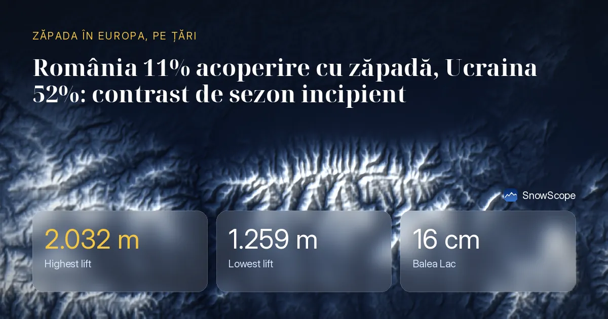
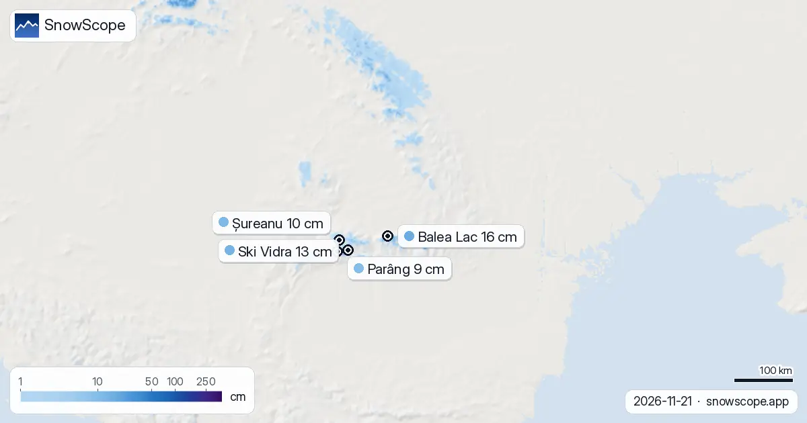

România 11% acoperire cu zăpadă, Ucraina 52%: contrast de sezon incipient
România are zăpadă pe 11% din terenurile sale înalte astazi, în timp ce Ucraina dincolo de graniță se situează la 52% acoperire. Diferența reflectă modele meteo diferite și altitudine: Carpații României au primit 7 cm în ultimele 72 de ore, dar sezonul tocmai începe să se stabilească după un început fragmentat.
Vezi prognoza de zăpadă pentru Balea Lac în aplicația SnowScopeGrosimea zăpezii, alerte și harta 3D, gratuit.
România și Ucraina: de ce diferența
Hidrologia zăpezii ne învață că modelele sezonului incipient depind de locul către care se deplasează masele de aer rece și care versanți se confruntă cu vântul predominant. Astazi, cota mai mare de alb a Ucrainei reflectă precipitații mai consistente pe lanțurile muntoase în zilele recente. Acoperirea de 11% a României este mai scăzută, dar pachetul de zăpadă de pe munte se îngroașă: la altitudini peste 2000 m, adâncimea medie a zăpezii este acum de 14 cm și acoperă 99% din teren.
Apa stocată pe vârfurile cele mai înalte ale României este reală și în creștere. Deasupra a 1500 m, 75% din arie are o anumită cantitate de zăpadă. Sub aceasta, imaginea este fragmentată. Aceasta este tipică pentru finele noiembrie în Carpați, când benzi de altitudine povestesc adevărata poveste.
| Country | White | Deepest resort | Next 7 days |
|---|---|---|---|
| Romania | 11 % | Balea Lac | 37 cm |
| Bulgaria | 1 % | Bansko | 22 cm |
| Ukraine | 52 % | Драгобрат | 17 cm |

Vecini și săptămâna viitoare
Ucraina conduce regiunea în acest moment cu 17 cm în cel mai adânc punct. Bulgaria deține doar 1% din cota de alb, vârfurile sale încă mai prind fulgi. În decurs de o săptămână, România va câștiga teren: modelul nostru prognozează un maxim de 37 cm zăpadă proaspătă până pe 28 noiembrie, comparativ cu 17 cm ai Ucrainei și 22 cm ai Bulgariei în aceeași perioadă.
Această schimbare conteaza pentru stocarea de apă. Rezervoarele și râurile României vor vedea contribuții mai mari odată ce această zăpadă proaspătă se stabilizează și se topește pe parcursul primăverii și a începutului verii.

Unde cade zăpada cel mai intens
Munții Rodnei sunt liderul curent al României cu 17 cm zăpadă proaspătă în 72 de ore. Retezatul urmează cu 15 cm, iar Munții Călimani dețin 10 cm. Acestea sunt zonele care stochează cea mai multă apă în acest moment. Pe 23 noiembrie, se prognozează un eveniment de 13 cm pentru a împinge totalurile mai sus pe toate lanțurile muntoase.
Linia zăpezii se situează la 1500 m astazi. Deasupra acesteia, acumularea se construiește în mod constant. Sub aceasta, doar pete izolate rămân pe versanții orientați către nord.
Stațiuni și săptămâna viitoare
Balea Lac, stațiunea cea mai înaltă la 2032 m, dețin 16 cm—baza cea mai adâncă din țară. Ski Vidra are 13 cm, Șureanu 10 cm. Toate cinci stațiuni principale sunt prognosticate să câștige 15 pâna la 18 cm în următoarele trei zile. Aceasta nu este încă o acoperire profundă, dar tendința este ascendentă.
Din cele 52 de zone de schi ale României, 22 raportează acum o anumită cantitate de zăpadă. Acest număr va crește pe măsură ce noiembrie se transformă în decembrie și banda de zăpadă coboară.
Tendința stocării de apă
Acoperirea cu zăpadă a crescut de la 3360 km² ieri la 7300 km² astazi—o creștere de 3940 km². Acum o săptămână era de 9120 km², deci ne reconstruim după o cădere la jumătatea săptămânii. Volatilitatea este normală pentru acest sezon: un eveniment de ploaie poate șterge zăpada de joasă altitudine rapid, apoi o perioadă rece și acumularea proaspătă o restabilesc.
Din punct de vedere hidrologic, volumul conteaza mai mult decât procentajul de suprafață. Adâncimea medie de 14 cm deasupra a 2000 m reprezintă apă stocată care va alimenta râuri și rezervoare pe parcursul iernii și primăverii.
Ce urmează
Prognoza pe 7 zile arată o zăpadă proaspătă maximă de 37 cm, cu cel mai intens eveniment—13 cm—pe 23 noiembrie. După aceea, activitatea se liniștește. A doua săptămână a lunii decembrie se așteaptă să aducă doar 17 cm în întreaga țară.
Pentru acum, povestea zăpezii din România este una de asamblare rapidă la altitudine. Hidrologia este favorabilă: aerul rece este încastrat deasupra a 1500 m, și munții prind ceea ce umezeală livrează sistemele meteorologice. La începutul lunii decembrie, baza va fi mai fiabilă.
Sfaturi pentru schiori
- Monitorizează linia zăpezii îndeaproape. Se situează la 1500 m astazi; orice eveniment de ploaie sub această înălțime nu va adăuga la stocul de altitudine mare.
- Munții Rodnei și Retezatul conduc acumularea de apă. Rute și rezervoare alimentate de aceste lanțuri vor vedea câștigurile de scurgere cel mai semnificative.
- Zăpada proaspătă pe 23 noiembrie poate fi neconsolidată. Dacă călătorești off-piste, verifica buletinul oficial de avalanșe și înțelege straturile sub orice pulbere recent căzută.
- Bazele sezonului incipient sunt subțiri. Stânci și vegetație rară rămân vizibile pe multe versanți inferiori. Alege-ți terenul în consecință.
- La începutul lunii decembrie, stocarea în zonele cele mai înalte va fi mai sigură. Modelul se consolidează, nu se retrage.
About these numbers
Resort snow depths are the deepest snow on the resort's upper slopes from the SnowScope snow model (about 1 km, run of 21 noiembrie); they are estimates for an area, not a measurement at one point. Station values are measurements on the date shown. Forecasts can change. Always read the official avalanche bulletin before going off-piste.
Cite this report
For research, teaching or the press: the numbers and charts are free to reuse under CC BY 4.0 with this citation.
SnowScope (2026), România 11% acoperire cu zăpadă, Ucraina 52%: contrast de sezon incipient, https://snowscope.app/blog/ro/2026/11/romania-snow-vs-neighbours-21-november-2026.html, accessed 2026-11-21
SnowScope (Atlas Labs). (2026, November 21). România 11% acoperire cu zăpadă, Ucraina 52%: contrast de sezon incipient. SnowScope snow reports. https://snowscope.app/blog/ro/2026/11/romania-snow-vs-neighbours-21-november-2026.html
BibTeX
@misc{snowscope2026romaniasnowvsneighbours2,
author = {{SnowScope (Atlas Labs)}},
title = {România 11% acoperire cu zăpadă, Ucraina 52%: contrast de sezon incipient},
year = {2026},
month = nov,
howpublished = {\url{https://snowscope.app/blog/ro/2026/11/romania-snow-vs-neighbours-21-november-2026.html}},
note = {Published 2026-11-22 10:03 UTC; accessed 2026-11-21}
}· CC BY 4.0 · Methods, data and tools →
Balea Lac: snow and temperature by height, this winter vs last (tools) →
Follow Balea Lac
Gratuit: un mesaj când vine zăpadă nouă și prognoza în fiecare dimineață.